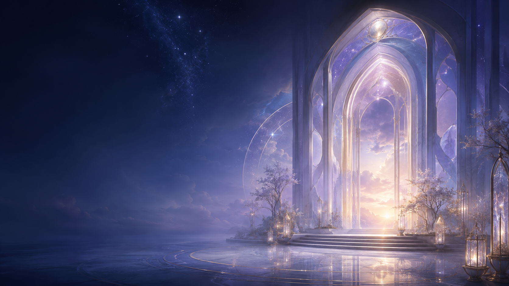

Lumen Archive
Dawn Atrium
Where the Archive first learns your name.

Lumen Archive
Where the Archive first learns your name.
No one enters the Lumen Archive already perfect, and no one is asked to. Bring the unfinished parts, the quiet questions, and the light still learning its own shape. The work ahead is not a test of worth, but a beautiful return to what has always been waiting within you.
“Everything we hear is an opinion, not a fact. Everything we see is a perspective, not the truth.”
Marcus Aurelius, Meditations